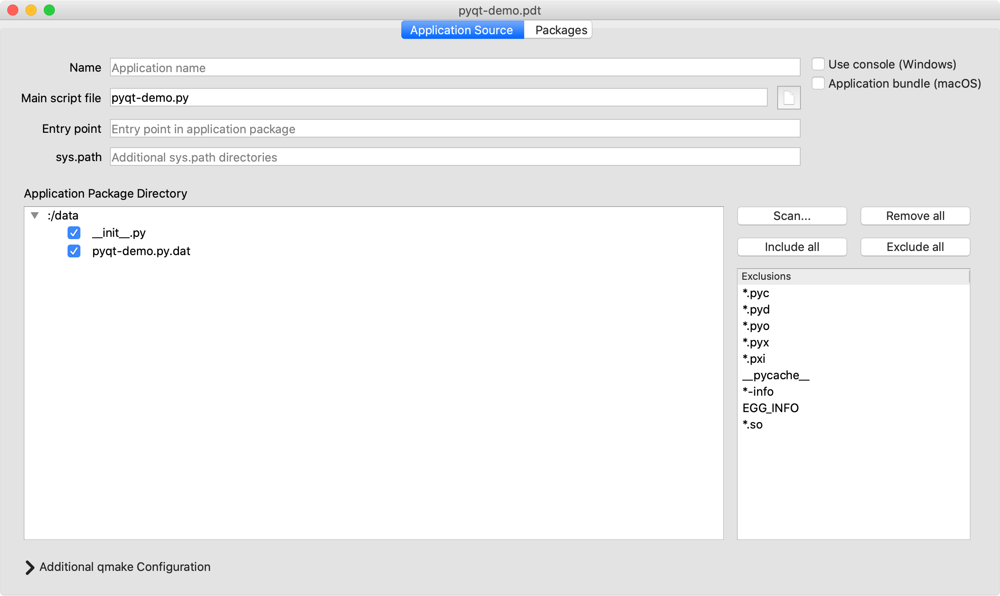
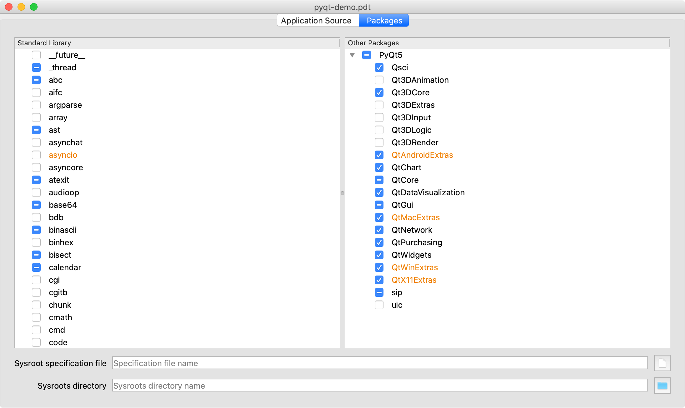

Creating a pyqtdeploy Project¶
The next stage of deploying a PyQt application is to create a pyqtdeploy project for it by running:
pyqtdeploy pyqt-demo.pdt
This will create a new project, or open an exiting one if the file
pyqt-demo.pdt already exists. A project is simply a file with a .pdt
extension.
A GUI will be displayed which consists of a File menu and a set of tabbed
pages that handle different aspects of the application’s specification and
building.
The File menu contains the usual set of options to create a new project,
open an existing project, save a project and rename a project.
Specifying the Application Source¶
Python applications are usually structured in one of the following ways:
a single standalone executable script that is installed in a
bindirectory somewherea package installed in
site-packageswith a separate executable script installed in abindirectorya package installed in
site-packageswith a separate executable script that is automatically generated bysetuptools. The script calls an entry point in the package. An entry point is the name of a module in the package and the name of a callable within the module separated by a:.
pyqt-demo is a single standalone script (but with some additional data which is the source code of the script).
The tab for defining the application source is shown below.
- Name
is used to specify the name of the final application executable. If it is not specified then it is derived from the name of the main script file. If the application does not have a main script file then the name is derived from the name of the application package.
- Main script file
is used to specify the name of the executable Python script used to invoke the application. It should not be specified if an entry point is specified.
Note
Whenever a file or directory is specified, pyqtdeploy always saves its name relative to the directory containing the project file if possible. In this particular example the
pyqt-demo.pyscript is in the same directory as thepyqt-demo.pdtproject file.- Entry Point
is used to specify the entry point of a
setuptools-based application. It should not be specified if a main script file is specified.- sys.path
is used to specify additional directories, ZIP files and eggs that will be added to
sys.path. By default pyqtdeploy generates an application that does not support the importing of packages or extension modules that are not embedded in the application. However there are circumstances where this ability is desired:you need to use an extension module that does not support being statically compiled
you allow users to write Python code that is imported by the application to configure or extend its functionality.
The path is specified as a space separated list of directories. Single or double quotes may be used to embed spaces in directory names. Environment variables (specified using the standard UNIX notation) are expanded when the application is run. Any relative directory names are assumed to be relative to the directory containing the application executable. UNIX path separators should be used - the application will automatically do the appropriate conversions when running on Windows.
pyqtdeploy also supports the dynamic loading of extension modules that are installed adjacent to the application executable (i.e. in the same directory as the application executable). This is useful for packages that are implemented as a combination of pure Python modules and extension modules where the extension modules do not support being statically compiled. The pure Python modules would be added just like any other Python package (see Specifying the Imported Packages). The extension module must be named according to its normal position in the package structure.
For example, suppose we have a package called
foowhich contains pure Python modules__init__.pyandbar.pyand a dynamically loaded extension modulebaz.so. (The extension module would be calledbaz.pydon Windows.) When used with the deployed application the module must be installed asfoo.baz.so(orfoo.baz.pyd) in the same directory as the application executable.On macOS an extension module will also be searched for in the
PlugInsandFrameworkssub-directories of the directory containing the application executable.Adjacent extension modules do not require
sys.pathto be set.Note
If you wish to allow the importing of external extension modules then you will also need to ensure that Python has been built with this enabled.
- Use console (Windows)
is checked if the application should use a console. Specifically it adds
consoleto the value ofCONFIGin the generated.profile and only affects Windows applications. It would normally be checked for command line (i.e. non-GUI) applications.- Application bundle (macOS)
is checked if the application should be built as a bundle and only affects macOS targets. It would normally be unchecked for command line (i.e. non-GUI) applications.
- Application Package Directory
contains the hierachy of files and directories that implement the application package and any associated data. It is populated by clicking the Scan… button. Each file or directory can then be checked if it is to be included in the package. Note that if the main script file is a part of the application package then it’s entry must be explicitly unchecked (i.e. excluded).
The demo includes a copy of it’s source file which is read (when using Python v3.7.0 or later) using the
importlib.resourcesmodule. This is stored in thedatadirectory. This directory must be a Python package and so it contains an empty__init__.pyfile. The source file is given a.datextension so that it doesn’t appear to be a Python source file to pyqtdeploy-build. If we didn’t do this then the source file would be replaced by its frozen version.- Scan…
is clicked to specify the name of the directory containing the Python package that implements the application. (If the application consists of a single script then you would not use this.) The hierachy will be scanned for all files and directories that don’t match any of the specified exclusions and will be displayed in the Application Package Directory.
- Remove all
is clicked to remove all the scanned files and directories.
- Include all
is clicked to check all scanned files and directories so that they are included in the application package.
- Exclude all
is clicked to uncheck all scanned files and directories so that they are excluded from the application package.
- Exclusions
is used to specify the list of glob-style patterns that are applied to the scanned files and directories. Those items that match are then completely ignored. To edit the list just double-click on the entry to modify or delete. To add a new entry just double-click the list after the last entry.
- Additional qmake Configuration
contains additional text to be added to the end of the
.profile generated by pyqtdeploy.
Specifying the Imported Packages¶
The tab for defining the packages and extension modules imported by the application is shown below.
- Standard Library
is used to specify each of the Python standard library packages and extension modules that are explicitly imported by the application. Each can be in one of three states:
checked meaning it is explicitly imported by the application
partially checked meaning it is implicitly imported by the application because another imported package depends on it, or the Python interpreter itself imports it
unchecked meaning it is not needed by the application.
You should always check a package if the application explicitly imports it, even if it is already shown as partially checked.
If a package is not provided by the Python component installed in the sysroot then it will not be displayed. For example the standard library
bz2package is not displayed because the sysroot does not provide thebzip2library on which it depends.If a package is only provided for a subset of targets then it is displayed in yellow.
If a package is displayed in red then it is not provided for any target. This is not necessarily an error, so long as the application gracefully handles the exception that will be raised when an attempt is made to import the package.
- Other Packages
is used to specify each of the packages and extension modules provided by all other components installed in the sysroot that are explicitly imported by the application.
- Sysroot specification file
is the name of the
.tomlfile that specifies the sysroot being used. The default issysroot.tomlin the same directory as the project file.- Sysroots directory
is the name of the directory that contains each individual target-specific sysroot directory. The default is the directory containing the corresponding sysroot specification file.